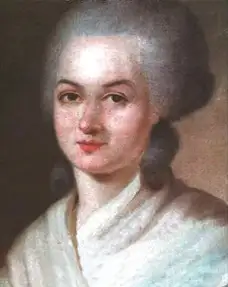
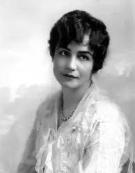
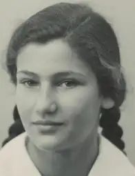
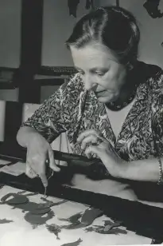
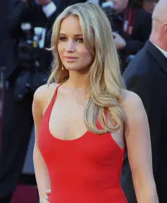

Voici la galerie des féministes qui, par leur convictions, ont marqués des générations entières :

Portrait d’Olympes de Gouges en 1788. (Wikipédia)
Olympes de Gouges, de son vrai nom, Marie Gouze, est la figure pionnière du féminisme. Elle est née le 7 mai 1748 à Montauban et est l'auteure de la Déclaration des droits de la femme et de la citoyenne. Par ses actions, elle a permis l’émergence de nombreux mouvements pour la libération féministe.
Elle a été guillotinée en 1763 sous la Terreur, à cause de la déclaration qu’elle a rédigé.

Lois Weber en 1916. (Wikipédia)
Lois Weber, née le 13 juin 1879, est une réalisatrice, actrice et productrice américaine. En tant que réalisatrice, elle devient l’une des figures féminines de l’ère du cinéma muet et excelle dans son domaine.

Simone Veil à 16 ans. (Wikipédia)
Simone Veil, née le 13 juillet 1927 à Nice, fait partie des femmes dont le nom restera ancrée dans l’histoire du féminisme. A 16 ans, elle fût déportée à Auschwitz mais réussit à s’échapper.
En 1974, elle fait adopter la loi dépénalisant le recours à l’IVG (interruption volontaire de la grossesse). Cette loi finira par être désignée sous le nom de la “loi Veil”. C’est une icône de la lutte féministe.

Portrait de Lotte Reiniger en 1939 (Moviefit.me)
Lotte Reiniger, née en 1899 est une célèbre réalisatrice allemande. Elle a notamment travaillé sur les tout premiers longs métrages d’animation.
Adolescente, elle se passionne pour le monde du cinéma. Au cours des années, elle assiste à plusieurs conférences sur l’animation qui lui feront devenir une référence dans l’industrie cinématographique.
Portrait d’Emma Watson (L’Usine Nouvelle)
Emma Watson, née le 15 avril 1990 à Paris, est une actrice connue pour sa participation à la saga d’Harry Potter. C’est une actrice qui s’engage dans la lutte féministe. En effet, elle est à l’origine de la campagne de solidarité pour l’égalité des sexes “HeForShe”.
Ambassadrice de bonne volonté d’ONU Femmes en juillet 2014, Emma Watson émet un discours sur le féminisme lors d’une conférence aux Nations Unis. Elle a conscience des enjeux relatifs à l’égalité entre les hommes et les femmes dans la société.

Portrait de Jennifer Lawrence (Vikidia)
Jennifer est une actrice américaine née le 4 août 1990 à Kentucky. Elle s’est faite connaître internationalement par sa présence dans le film Hunger Games ou elle joue Katniss Everdeen.
Tout au long de sa carrière, elle dénonce les inégalités salariales et l’harcèlement sexuel que subissent les femmes. Par sa volonté, elle devient une actrice militante du féminisme.